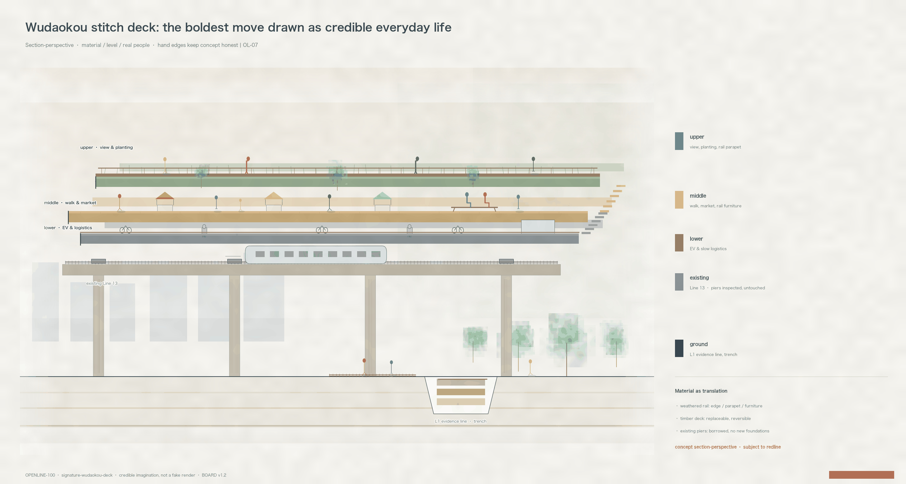

Road and ticket
The Openline is the road; Open Ticket is the fare. A line without a fare system is engineering. See the institutional section
Three chapters together: the Openline is the road, Open Ticket is the fare, rails of humanity is the soul. Authority remains in GeoJSON / metrics / matrices. Provisional footprints are not official redlines.

Base → Ecology → Infra → Program → Activity · Sasaki v1.1 · provisional soft constraint

The Openline is the road; the Ticket is its rule of use—the 1909 right-of-way, rewritten as the citizen right-of-way of the digital century. Locked data trust, three-tier consent, one-click revocation with deletion receipt, versioned kit-of-parts. Governance concept, not adopted policy—to be co-built with district and data authorities.
The Openline is the road; Open Ticket is the fare. A line without a fare system is engineering. See the institutional section
Each phase answers build / pay / operate / return. Reversibility is low risk.
In 1909 “ren” drew the line's shape; in this century it names whom the line belongs to. See the soulful board

Special-purpose bond → district pooling → corporate adoption relay—not a multiple-choice. The Wudaokou deck is bolted, not poured: a wrong demo is not a sunk cost. Magnitudes only (A-CAPITAL-001), not a cost plan. Full phase table in the readable report and the winning-kit below.
Urban design competition bar: atmosphere before consulting copy. Not CDs—but make people want to enter.

① L1: rails underfoot · canopy overhead · Kilometer Zero ahead

② Wudaokou: EVs below · people mid · view above · deepen after redline

③ Dazhongsi: SW street entry · SE school-safe · NW Bell Museum wayfinding · NE grocery—Adoption must be reachable

Place section · one L1 ground, city on both sides. Paving / trench / old rail as seat—reviewers see steel, not icons.

One ground, five cuts: paving / trench / seat and lamp / thinking stone / talk by the rails.

From preserving to continuing Jing-Zhang: 1909 the train turned on the ridge → 2026 the city turns over the built stock → this century AI turns on human rails. Grading is a literature framework pending survey; voice slots await real collection (A-HERITAGE-001).

Place section: existing city · L1 steel in the cut · piers · three paper-thin decks · Jing-Zhang heritage park. Deepen after redline—courage, not false precision.

Signature image: from concept engineering drawing to a section-perspective with material, level change and real people—the spatial proof of EVs below, people mid, view above.
Overview map with the three-level scope and land-use structure on the Openline.

43.6 is the bench; three areas and two wings are the engine. Science City North and the Jing-Zhang north continue are interfaces, not a second park. Qinghe is a river, not Qinghe Station.

The park is the bond. Campuses, parks, rail, firms and communities sit in real geography; Financial Street is a south-of-Xizhimen adjacency, not inside 43.6.
43.6 km² ecosystem and future form.
11.4 km² regulatory-depth design. Overlay: approved block plan (16.68 km², north to Chengfu Rd)—one belt, one axis, two centers.
Three directional detailed-design areas.


1:2000-level block refinement, not a statutory sheet. Motherboard courts · conversion street · street wall.


Place sections, not one-point symbol streets. Cut to see the court, KM0, the deck, the station below, the river.


Phasing counterpart; capital-loop guide sits above at #capital. Reversibility is low risk: bond → district pooling → corporate adoption relay. Magnitudes only (A-CAPITAL-001), not a cost plan.
Zhongzhiyuan (required competition key area / not covered by this block plan’s published extents) / Origin (Wudaokou center) / Dazhongsi (Dazhongsi center): building envelopes and renewal projects OL-01–OL-09; retain/renovate method only.

N–S Openline and E–W stitches; blue–green public space along the heritage-park band.

Blue–green is five numbers, not an adjective: carbon budget / runoff capture 75→85% / heat island −0.5→−2.0 °C / biodiversity net gain +5→+10% / canopy 25→35%. Sensors feed the civic data trust; the Verify gate publishes quarterly; misses trigger component-library fixes. Design targets (A-ECO-001), not measured results.
Task coverage for announcement §§1.3–1.5 and agent.1–agent.6. Self-check status: provisional intake only; full recalculation after official polygons.


Role-type map—no named institutions, firms, or amounts. Center: full-stack R&D | open questions | urban adoption + two wings. Flows: problem / adoption / resource / commons.
The shared base stays stable while five R&D unit types keep upgrading; the Full-Stack Collaboration Street links upstream and downstream teams, and the governance center embeds standards, safety, and responsibility in R&D. Do not rebuild the Jing-Zhang Ring.
Authorization window + eight-find co-location + open release + community micro-scenes; the Failure Case Library is Card 01's inherit interface, not the whole 104 ha. No claimed campus/owner consent. Official ~3 km² does not replace 104 ha.
Verified capability must go on the street: try / buy / subscribe / refuse. Station integration and four quadrants are arrival only. No replica bell; do not rename the mall atrium.
Rights → match → claim → use → leave · skip one link and it is only a near-campus park
Street rule ‖ off-street exception ‖ living remainder · 8 minutes only tests a passerby
Invariant / variable / license · 15 minutes only tests readability after change
Origin · standalone form of Card 01 open release
Governance center + controlled Embodied AI ground · visible at the public explanation interface
Spine node · test
Spine · opt-out
Dazhongsi · cleared media
Shared green base · human patrol
Origin · human legal window
Adoption · test
Xiaoyuehe-wing stations · hear/anticipate/resolve · not a key-area depth card
Belt public system
Sources: sources.json · Assumptions: A-CONTROLS-001 / A-PROV-BOUNDARY-001 / A-OPENLINE-CONCEPT-001 · empty constraints.geojson beats invented control lines.
Offline static page: no CDN, remote tiles, external fonts, iframes, or APIs.